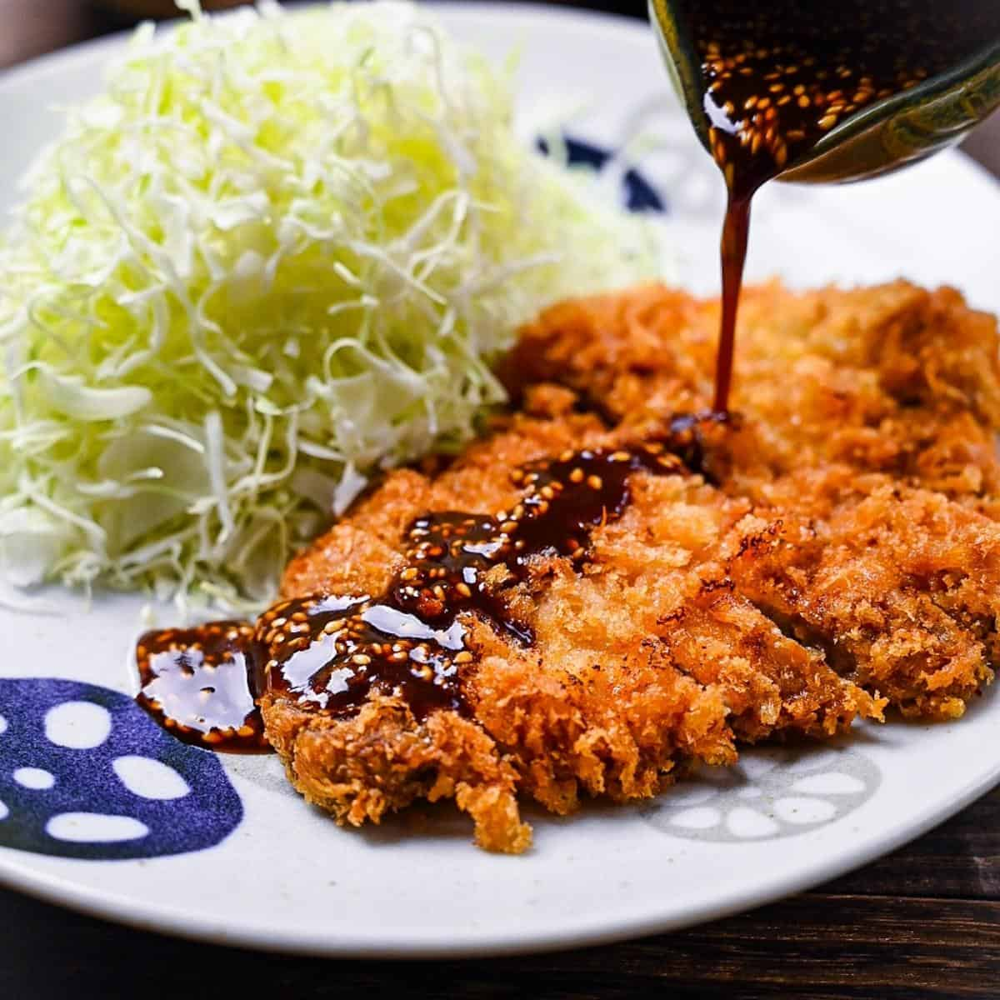

Tonkatsu

How to Cook
Ingredients
Serving 2
For shredded cabbage salad
- 1/4 head green cabbage
- 1 Japanese or Persian cucumber
- 4 Tbsp Japanese sesame dressing
For sesame dipping sauce
- 1 Tbsp toasted white sesame seeds
- 1 Tbsp toasted black sesame seeds
- 4 Tbsp tonkatsu sauce
For breading
- 1/2 cup Panko
- 1 large egg
- 1/2 Tbsp vegetable oil
- 2 Tbsp all-purpose flour
For Tonkatsu
- 2 boneless pork loin chops (1/2 inch thick)
- 1/2 tsp Kosher salt
- 1/8 tsp ground black pepper
- 3 cups vegetable oil
Directions
Prep shredded cabbages
- Shred green cabbage super thinly with a knife or a slicer.
- Thinly slice cucumber diagonally.
- Toss cabbage and cucumber together and set aside.
- Prep Japanese sesame dressing and keep refrigerated until ready to serve.
Prep dipping sauce
-
Grind white sesame seeds and black sesame seeds with a pestle and mortar.
Leave some seeds unground for texture.
- Mix the seeds with tonkatsu sauce and keep refrigerated until ready to serve.
Prep panko and breading
- Spread panko to a deep dish and spray with water until panko is moist.
- Set aside for 15 minutes or until panko gets soft and tender.
-
While panko is getting soft, crack large egg in another deep dish and pour vegetable oil.
Whisk together until well combined.
- Prepare another deep dish with all-purpose flour.
Prep meat
- Use a knife to remove extra fat from pork loin chops.
- Make several slits on the connective tissue between meat and fat. Flip the meat and make slits on the tissue.
- Pound both sides of meat with back of knife or meat tenderizer and mold the meat back into its original shape with hands.
- Season both sides of meat with kosher salt and black pepper.
Bread the pork
- Dredge the pork in the flour and dust off any excess.
- Dip the pork into egg mixture and coat well.
-
Finally, dredge the pork in panko, gently pressing the panko onto the pork.
gently shake off excess panko, then place the pork onto a tray or plate.
- Set the pork aside for 5 to 10 minutes so the breading will set.
Deep fry: first frying
- Add vegetable oil to a pot and bring it to 340F (170C) over medium heat.
Make sure your oil is around 2 inches deep in the pot.
- Gently put a piece of pork into the oil and cook for 1 minute without flipping.
Do not touch the pork for 30 seconds!
- After a minute, flip the pork and cook the other side for 1 minute.
-
Take out the pork and remove excess oil by holding it vertically over the pot for few seconds.
Place it on a wire rack or a plate sheeted with paper towel. Let it sit for 4 minutes.
The hot oil on the exterior will slowly continue cooking the meat.
-
Turn off the heat of pot for a moment and scoop up and discard any fried crumbs in the oil.
By doing this way, the oil does not get darker and dirtier with burnt crumbs.
Turn on the heat and bring the oil back to 340F (170C).
- Repeat the process until all pieces of pork are fried.
Deep fry: second frying
-
Bring the oil to 355F (180C) and fry the pork for 30 seconds on each side.
Remove the pork from the pot and drain excess oil. Place it on a rack or a plate.
- Scoop up and discard the fried crumbs in the oil, then continue the same process until all the porks are fried again.
Serve
- Cut the tonkatsu into slices 3/4 inch wide.
- Place it on a plate and serve it with the shredded cabbage and cucumber, the sesame dressing in a cup, and the sesame dipping sauce on the side.